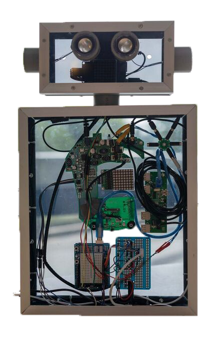
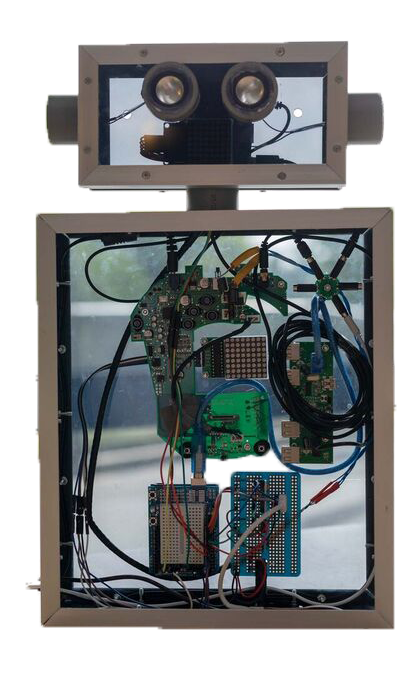

Artificial creature
This project was done for the course ‘Human computer intelligence’. The assignment was to make anything using the theories learnt in the course.
This project was done for the course ‘Human computer intelligence’. The assignment was to make anything using the theories learnt in the course.
There were four different subject teached in this course. Exertion gaming, Augmented reality & Virtual reality, Wearables and Artificial creatures. Through out the course you learnt everything about these subject and how they work. In the last two weeks of the course you were assigned one of the subject where you had to make something using all the information you have learned. I was assigned the subject artificial creature.
In these two weeks, the labweeks, I worked on making an artificial creature named Goo Goo. This is a robot who talks to you and answers any questions you might have. The idea behind it is that it’s a kind of roommate, someone you can talk to. You can ask her anything, something about herself, who she is, what she can do or about other things, like a certain recipe, about the weather, sports, the latest news, etc.
To get Goo Goo working, you always have to start with “hey Goo Goo”. At that moment her lights, that were white at first, will turn red to let you know she’s listening. Then you ask your questions. The lights turn blue when you finish to let you know that she’s going to answer. With help of the raspberry pi, google assist was added to her which means she can answer any questions you would ask google about. You can also add a number of them yourself and the answer you want her to give to those questions.


Click on the button to learn more about the subjects and proces. Do you want to see more of Goo Goo? Watch the video on the right or go to the page 'labweeks' in the profile.